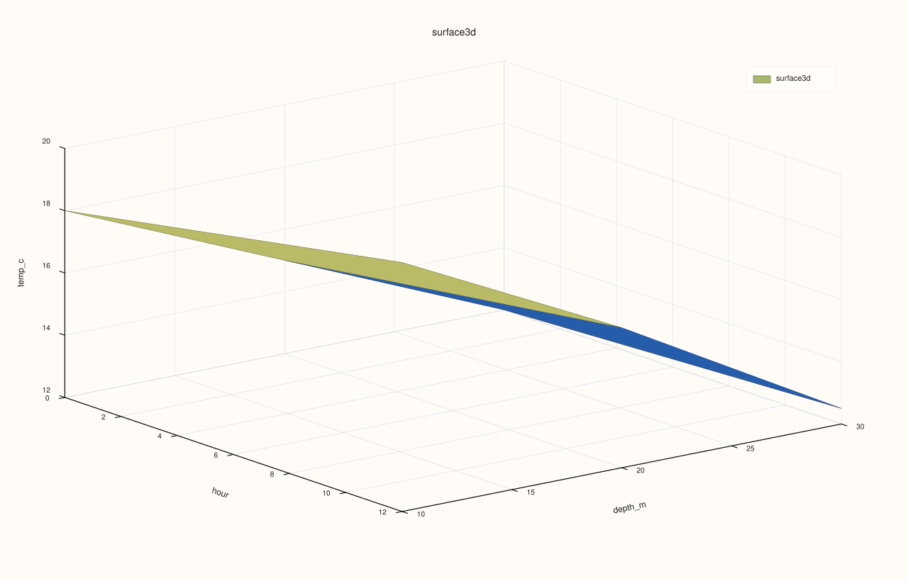
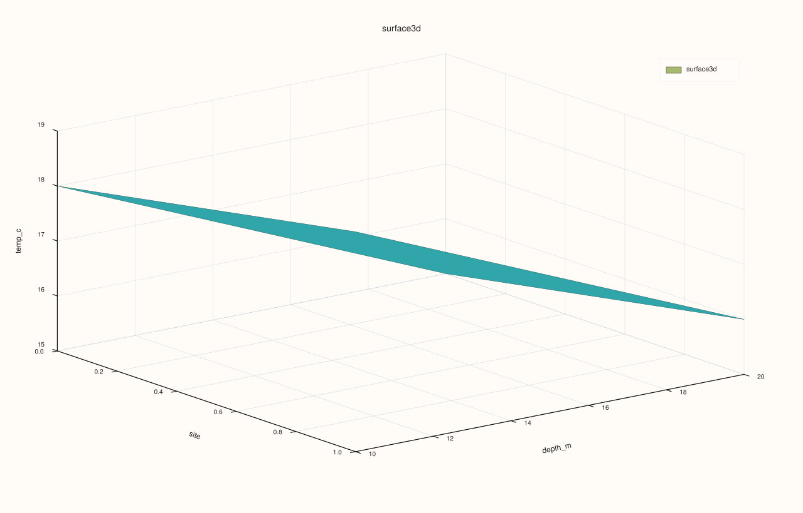
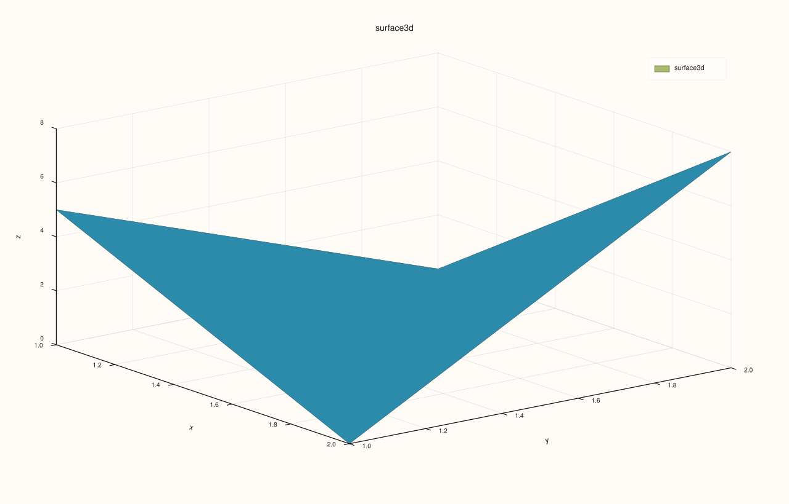
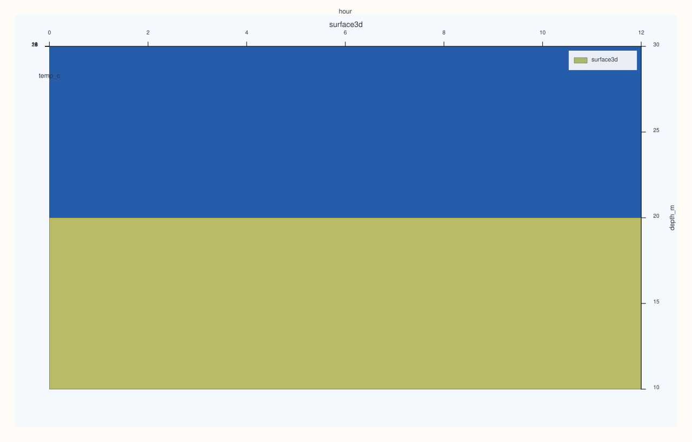

DataFramePlot3DAccessor::surface¶
Back to DataFramePlot3DAccessor API Reference
Signature¶
DataFramePlot3DAccessor::surface(
std::string_view x_feature,
std::string_view y_feature,
std::string_view z_feature,
DataFrame::GroupOp op = DataFrame::GroupOp::Mean,
const Surface3DPlotOptions& options = {}) const -> pluss::pl::Studio
What It Does¶
Draws a continuous 3D surface mesh over an aggregated grid: y_feature’s distinct values
become the grid’s rows, x_feature’s distinct values become the grid’s columns, and each
cell’s height is z_feature aggregated (using op) across every row sharing that
(x, y) combination. Internally this is built by calling
frame_.pivot_table(y_feature, x_feature, z_feature, op, /*dropnull_keys=*/true, /*render=*/false) — the same pivot machinery DataFramePlotAccessor::heatmap’s
grouped mode uses, but the resulting grid is rendered as a 3D mesh instead of a flat
2D color grid.
See line() for the shared Studio-return / no-cout mechanics and the full
Plot3DSceneOptions/Plot3DTraceOptions layering explanation — this page only covers what
is specific to surface().
Important
plot3d still needs a numeric grid even though pivot_table is broader now
pivot_table() now supports the full grouped aggregation set here too, including Std,
Var, and Mode. The 3D renderer is narrower for a different reason: after pivoting, the
result still has to become a numeric z-grid. Numeric reductions (Sum, Mean, Median,
Min, Max, Std, Var) therefore still require z_feature to be numeric. Mode is
only meaningful here when the pivoted result can still be converted to numeric values for
plotting.
Note
How each axis gets its grid coordinates
The y-axis comes from the pivoted table’s row labels (the distinct y_feature
values): if a label converts to a finite number, that number is used directly as the
y-coordinate; otherwise (categorical/text y_feature values) the row falls back to its
positional index (0, 1, 2, …) instead. The x-axis comes from the pivoted
table’s column names (the distinct x_feature values, stringified): each name is parsed
with strtod — if the entire string parses cleanly as a number, that’s the x-coordinate;
otherwise it falls back to its positional column index the same way. In practice this
means a numeric x_feature/y_feature produces a genuinely numeric, meaningfully-spaced
grid, while a categorical one produces evenly spaced integer positions — visually similar
to surface()’s grid always being “rectangular” regardless of the original
features’ actual value distribution.
Note
Rows where x_feature or y_feature is invalid are silently dropped
pivot_table() is always called with dropnull_keys = true here — a row whose
x_feature or y_feature value is invalid (masked/null) is excluded from the pivot
entirely, rather than becoming its own "NULL" row or column.
Note
Missing (x, y) combinations fill to zero, not NaN
Once the pivot grid is built, any (x, y) cell with no matching rows at all becomes
non-finite in the underlying aggregation and is then replaced with 0 before rendering —
the same zero-fill behavior documented for heatmap()’s
grouped mode, not the NaN-gap behavior of parallel().
Parameters¶
x_feature (std::string_view)
Feature whose distinct values become the grid’s columns (x-axis).
y_feature (std::string_view)
Feature whose distinct values become the grid’s rows (y-axis).
z_feature (std::string_view)
Feature aggregated into each grid cell’s height.
op (DataFrame::GroupOp, default Mean)
The aggregation applied per cell — see the important callout above for which values
are actually supported.
options (Surface3DPlotOptions)
cpp struct Surface3DPlotOptions { Plot3DSceneOptions scene{}; Plot3DTraceOptions trace{}; };
The same shared structs documented in full on line(); surface() has no
fields of its own beyond these two.
Returns¶
pluss::pl::Studio
A figure with one 3D pane containing a single continuous surface-mesh trace over the
aggregated grid.
Examples¶
Example 1. Default op (Mean): a numeric x/y grid, aggregated by mean.
using namespace pluss::table;
auto readings = DataFrame({
{"depth_m", Thread(pluss::make_series({10.0, 10.0, 20.0, 20.0, 30.0, 30.0}))},
{"hour", Thread(pluss::make_series({0.0, 12.0, 0.0, 12.0, 0.0, 12.0}))},
{"temp_c", Thread(pluss::make_series({18.0, 20.0, 15.0, 16.5, 12.0, 12.5}))},
});
auto chart = readings.plot3d().surface("hour", "depth_m", "temp_c");
chart.save_svg("temp_surface.svg");
hour’s two distinct values (0.0, 12.0) become x-columns; depth_m’s three distinct
values (10.0, 20.0, 30.0) become y-rows; each cell is the mean temp_c for that
hour/depth combination — here, each combination happens to have exactly one matching row,
so the “mean” is just that row’s own value.

Example 2. A different aggregation (Max).
auto chart = readings.plot3d().surface("hour", "depth_m", "temp_c", DataFrame::GroupOp::Max);
chart.show();

Example 3. A categorical x_feature: falls back to evenly spaced positional x-coordinates
instead of parsed numeric values.
auto tagged = DataFrame({
{"site", Thread(pluss::make_note({"north", "north", "south", "south"}))},
{"depth_m", Thread(pluss::make_series({10.0, 20.0, 10.0, 20.0}))},
{"temp_c", Thread(pluss::make_series({18.0, 15.0, 19.0, 16.0}))},
});
auto chart = tagged.plot3d().surface("site", "depth_m", "temp_c");
chart.save_pdf("site_surface.pdf");
site’s two values ("north", "south") don’t parse as numbers, so the x-axis places
them at positions 0.0 and 1.0 instead of any meaningful numeric spacing.

Example 4. Missing (x, y) combinations fill to zero.
auto sparse = DataFrame({
{"x", Thread(pluss::make_series({1.0, 2.0}))},
{"y", Thread(pluss::make_series({1.0, 2.0}))},
{"z", Thread(pluss::make_series({5.0, 8.0}))},
});
auto chart = sparse.plot3d().surface("x", "y", "z");
chart.show();
The pivot grid is 2×2 (x values 1.0/2.0, y values 1.0/2.0), but only the
(1.0, 1.0) and (2.0, 2.0) cells have matching rows; the other two cells ((1.0, 2.0)
and (2.0, 1.0)) have no matching data and render at height 0, not as gaps.

Example 5. Std is now supported, producing a sample-standard-deviation grid.
auto repeated = DataFrame({
{"depth_m", Thread(pluss::make_series({10.0, 10.0, 10.0, 10.0}))},
{"hour", Thread(pluss::make_series({0.0, 0.0, 12.0, 12.0}))},
{"temp_c", Thread(pluss::make_series({18.0, 20.0, 15.0, 19.0}))},
});
auto chart = repeated.plot3d().surface("hour", "depth_m", "temp_c", DataFrame::GroupOp::Std);
chart.show();
Example 6. A Plot3DSceneOptions scene preset applied to the surface.
Surface3DPlotOptions options;
options.scene.preset = pluss::pl::flash::ScenePreset3D::Topology;
auto chart = readings.plot3d().surface("hour", "depth_m", "temp_c", DataFrame::GroupOp::Mean, options);

Notes¶
Numeric aggregations (everything but
Count/Ndistinct) requirez_featureto already be a numericSeries.Modefollowspivot_table()’s broader semantics, but only makes sense here when the resulting mode values still convert numerically for plotting.x/y grid coordinates are parsed-as-number-or-positional-fallback — see the note above.
Rows with an invalid
x_feature/y_featureare dropped; missing(x, y)cells fill to0, notNaN.Returns a
pluss::pl::Studio— seeline()’s important callout for how to view or save the result.
See Also¶
DataFramePlot3DAccessor::wireframe: the identical grid construction, rendered as mesh edges instead of a filled surface.DataFramePlot3DAccessor::hist: a binned-count grid instead of an aggregated-value grid, withas_surface = trueproducing a visually similar mesh.DataFramePlotAccessor::heatmap: the 2D counterpart, reusing the samepivot_table()-based grouped mode.